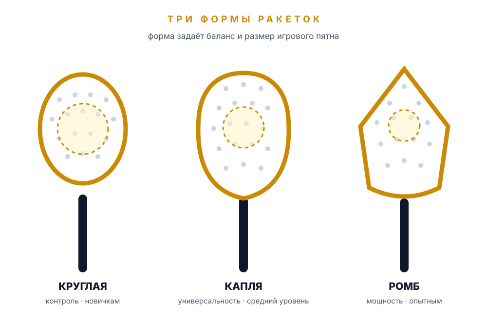

Как выбрать ракетку: полный гид
Форма, вес, баланс, виды EVA и карбона — подробный разбор на русском языке с примерами моделей.
Падел-ракетка — сплошная, без струн. От её формы, веса и материала зависит, насколько легко вам будет контролировать мяч, сколько силы уйдёт в удар и как быстро устанет рука. Разбираем виды ракеток и то, на что смотреть при покупке.
Падел-ракетку часто называют палой (pala). Это не уменьшенная теннисная ракетка, а отдельный снаряд: сплошная перфорированная поверхность без струн и жёсткая рукоятка со страховочным ремешком. По правилам FIP длина ракетки — до 45,5 см, толщина профиля — до 38 мм, а вес большинства взрослых моделей лежит в диапазоне 350–380 г.
Из-за отсутствия струн мяч контактирует с большой ровной поверхностью: ракетка прощает больше ошибок в точке удара, но меньше «выстреливает» сама. Поэтому сила удара в паделе зависит не только от замаха, но и от жёсткости сердечника, материала поверхности и баланса.
Плоская панель с отверстиями. Перфорация снижает вес и сопротивление воздуха, а рисунок отверстий у каждого бренда свой.
Мягкая пена даёт комфорт и прощает неточный удар, жёсткая — больше мощности и чёткости, но требует техники.
Карбон жёстче и мощнее, стекловолокно мягче, дешевле и дружелюбнее к новичкам. Бывают гибридные варианты.
Обмотка подбирается по руке, при необходимости добавляется овергрип. Страховочный ремешок обязателен во время игры.
Пластиковый протектор принимает удары о стекло и покрытие. Это расходник: его можно заменить, не меняя ракетку.
Зона на головке, где удар получается самым точным и сильным. Чем она больше, тем легче играть.
Форма головки определяет две главные вещи: где находится баланс и насколько велико игровое пятно. Чем ниже баланс, тем легче ракетка в замахе и тем больше контроля. Чем выше — тем тяжелее головка, тем сильнее удар и меньше времени на подготовку.

| Форма | Баланс | Игровое пятно | Характер | Кому подходит |
|---|---|---|---|---|
| Круглая | Низкий | Самое большое | Контроль, стабильность, прощение ошибок | Новичкам и тем, кому важна надёжность |
| Капля | Средний | Среднее | Универсальность: контроль плюс мощность | Большинству любителей, переходящим на средний уровень |
| Ромб | Высокий | Маленькое | Максимальная мощность и агрессивная атака | Опытным игрокам с поставленной техникой |
Низкий баланс делает ракетку послушной: её легко разгонять, она не «тянет» руку вперёд и хорошо ведёт себя в защите. Большое пятно прощает промахи по центру — именно поэтому круглая форма считается лучшим выбором для первой ракетки. Плата за это — меньше мощности на смэшах и меньше агрессии в атаке.
Самая распространённая форма у любителей. Баланс смещён к центру, пятно чуть меньше, чем у круглой, но заметно больше, чем у ромба. Капля не мешает учиться защите и уже позволяет атаковать, поэтому её часто берут на второй-третий сезон, когда техника становится стабильнее.
Высокий баланс переносит вес к головке: удар получается сильнее, но ракетку сложнее готовить к мячу, а маленькое пятно наказывает за неточный контакт. Ромб имеет смысл, когда базовая техника уже стоит, а сила удара нужна для завершения розыгрышей. Новичку такая ракетка чаще мешает, чем помогает.
Две ракетки могут весить одинаково, но ощущаться совершенно по-разному. Поэтому при выборе смотрят не на одну цифру, а на сочетание параметров.
| Параметр | Варианты | Что это даёт |
|---|---|---|
| Вес | Обычно 350–380 г | Лёгкая ракетка меньше утомляет и быстрее в защите, тяжёлая даёт больше инерции в ударе. |
| Баланс | Низкий, средний, высокий | Показывает, где сосредоточена масса: у рукоятки — контроль, у головки — мощность. |
| Сердечник | Мягкая, средняя, жёсткая EVA | Мягкая пена комфортнее и прощает ошибки, жёсткая мощнее и точнее, но требовательнее. |
| Поверхность | Стекловолокно, карбон, гибрид | Стекло мягче и дешевле, карбон жёстче и мощнее, гибрид — компромисс. |
| Игровое пятно | Большое, среднее, маленькое | Чем больше пятно, тем легче попасть в центр и тем стабильнее удар. |
| Перфорация | Разное число и рисунок отверстий | Влияет на вес, аэродинамику и распределение жёсткости поверхности. |
Для первой ракетки разумный ориентир — 350–365 г: такой вес не утомляет руку за час игры и позволяет успевать перестраиваться у стекла. Ракетки 365–375 г — универсальная середина для игроков с опытом, а всё, что тяжелее 375 г, требует хорошей физической формы и техники. Помните, что производители указывают средний вес, а конкретный экземпляр может отличаться на несколько граммов.
Низкий баланс — масса ближе к рукоятке: ракетка кажется легче, чем есть, и лучше контролируется. Высокий баланс — масса в головке: удар мощнее, но замах медленнее и нагрузка на кисть выше. Если вы не уверены, что выбрать, берите средний баланс: он не мешает ни защите, ни атаке.
Сердечник из мягкой EVA-пены лучше гасит вибрацию и помогает выталкивать мяч даже при неполном замахе. Жёсткая EVA даёт более упругий отскок и точность, но передаёт больше нагрузки в руку. Похожая логика у поверхности: стекловолокно мягче и доступнее, карбон — жёстче и мощнее.
Маркировка карбона 3K, 12K, 18K означает число углеродных волокон в жгуте, а не универсальный «рейтинг крутости». Ощущение от ракетки зависит от плотности плетения, смолы, сердечника и формы — поэтому смотреть только на цифру на наклейке не стоит.
Хорошая ракетка — не самая дорогая и не та, которой играет профессионал, а та, что соответствует вашему уровню, руке и манере игры. Вот последовательность, которая помогает не ошибиться.
Новая ракетка — самый предсказуемый вариант: вы получаете гарантию и точно знаете историю снаряда. Модель прошлой коллекции обычно стоит заметно дешевле, но почти не уступает актуальной по характеристикам — это лучший компромисс по цене и качеству. Б/у ракетку стоит брать только после осмотра: проверьте рамку, поверхность, протектор, ремешок и равномерность перфорации. Внутренние повреждения сердечника не всегда видны, поэтому у незнакомого продавца лучше не рисковать.
Популярные бренды часто копируют. Покупайте у официальных дилеров или в клубах, проверяйте серийный номер, голограмму и качество печати. Слишком низкая цена на «топовую» модель — первый признак подделки. Дешёвые безымянные ракетки могут подойти для первых занятий, но их вес и жёсткость нестабильны от экземпляра к экземпляру.
Дорогая ракетка не компенсирует отсутствие техники. Новичку мощная жёсткая модель с маленьким пятном чаще мешает: он чаще бьёт мимо центра и быстрее устаёт. Разумнее взять недорогую контрольную ракетку, а разницу вложить в несколько занятий с тренером — прогресс будет заметнее.
База уже есть — теперь посмотрите, как те же параметры объясняют тренеры. Начните с русского гида, затем сравните с английским взглядом на выбор.
Форма, вес, баланс, виды EVA и карбона — подробный разбор на русском языке с примерами моделей.
Английский урок о том, как форма и баланс связаны с уровнем игрока. Включите субтитры и следите за терминами.
Видео принадлежат их авторам и воспроизводятся через YouTube. Если встроенный плеер недоступен, откройте ролик на YouTube по названию канала.
Ракетка выбрана. Осталось освежить правила и поставить базовые удары.